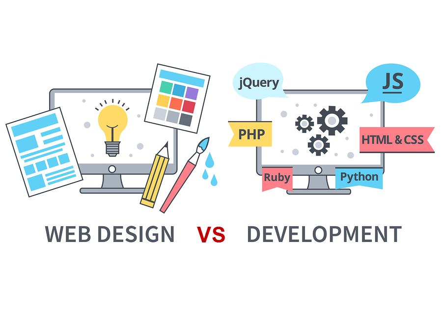

> cs 412: web application development_
Professor Leesha "Aisha" Shah
moliri: (latin, v) to endeavor, to attempt, to create
lmshah2 {at} neiu {dot} edu
CBT 105
>
syllabus
>
welcome :)
>
WebDev progress map
>
student drive
>
slack

> welcome :)_
Web Development is one of the most common and accessible ways to practice end-to-end software development, where you design for both the front-end interactions of your user, and the back-end architectures required to make that user experience a reality. The effective design of web systems and applications requires a keen understanding of how our underlying design and engineering structures usefully support our user's endeavors (or not).
Through this course, we will learn to craft useful and usable websites ourselves. In part, we’ll focus on developing our structural understanding of web development. How do we use HTML, CSS, and JavaScript to build a website? What are their roles individually? And how do they work in concert with one another? We’ll practice by working on structured assignments, roughly once a week. During your Weekly WorkShops, you will work with our Peer Leader to uncover and overcome obstacles as you learn.
In the latter half of the semester, we will also begin a project where you will architect your own website from scratch, culminating in your final website and presentation. Through these projects, you will practice effective ways of working – planning out your timelines, seeking help when stuck, reflecting on your ways of working. In learning to “do”, we will challenge ourselves to face and embrace our fears, imperfections, and failures that may otherwise hold us back from taking the next step forward. Together, we will practice how to approach web development skillfully.
> Week 4: Lists and Tables_
This week, we learn how to format data into lists and tables on our sites, using both HTML and CSS. We'll practice ways to customize the formatting of our lists (like changing what our bullets look like, or how we count for an ordered list). For tables, we'll learn things like how to change row and column sizes, border formatting, and adding headers/footers to the table.
Remember to check our WebDev progress map for the material each week!
> Week 3: CSS Box Model_
This week, we will continue exploring CSS, with a focus on the Box Model. We'll learn about how to use the Box Model to do things like set margins around elements on our sites, or center items relative to the screen size of your user.
Remember to check our WebDev progress map for the material each week!
> Week 2: CSS Basics_
This week, we will be explore the basics of CSS. We'll learn about how to use CSS to separate out the formatting of our elements from our HTML, which focuses on content and structure of our elements. We'll also learn how to connect our CSS files to our HTML files.
Remember to check our WebDev progress map for the material each week!
> Week 1: HTML Basics_
This week, we will be diving into some HTML basics. We'll learn about new elements you can include in your page structure, and how to specify attributes, or characteristics of those elements. For example, how do I specify the source file for an image I want to put on my site?
You have each been added to our course slack, which will be our main channel of communication -- join ASAP for announcements! You will also use our student drive, where I will share files related to the course.
Remember to check our WebDev progress map for the material each week!
> Week 0: Orienting to the Course Ecosystem_
This week, your job is to simply orient to our course ecosystem and review the syllabus. Links to all of these above.
You have each been added to our course slack, which will be our main channel of communication -- join ASAP for announcements! You will also use our student drive, where I will share files related to the course.
Every week, you will find the required lectures, slides, readings, project assignments, and quizzes in our WebDev progress map. This doc lives in our student drive. You must complete these deliverables before the next week's Monday lecture.
You will also meet weekly with your Peer Leader, Daniel, for our Workshops. These take place via Zoom starting next week. Please complete this when2meet this week so we can find a time that works best for everyone. More info to come!
See you soon.
This class draws from the designs of Rachel Adler.